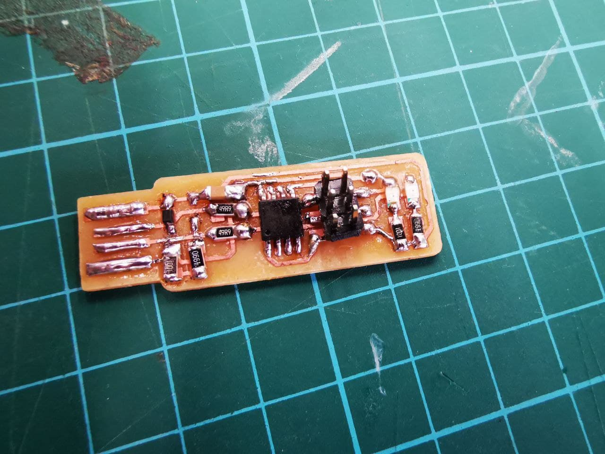
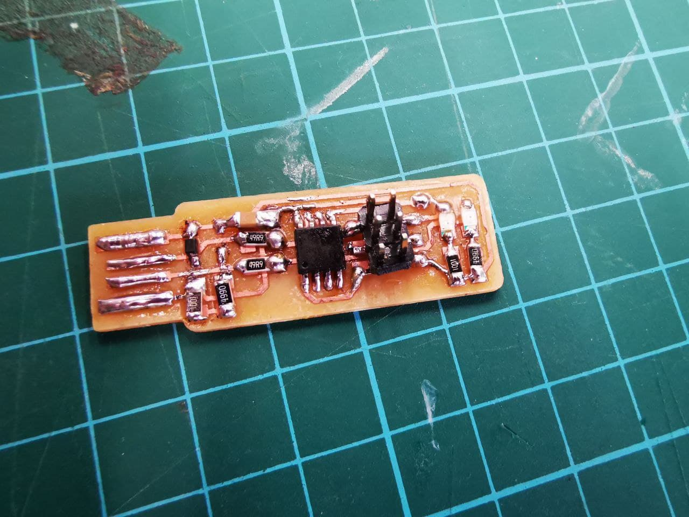

What is an Embedded System?
An embedded system is a microprocessor- or microcontroller-based system of hardware and software designed to perform dedicated functions within a larger mechanical or electrical system.
What is Embedded Programming?
Embedded programming is to write out a program instructions for embedded systems, this is often referred to as firmware, and are stored in read-only memory or flash memory chips.
How to start programming our ATTiny85 board?
The ATTiny85 board we created from scratch can't be programmed right away like an Arduino board as it does not have a usb connector for us to plug it directly to our computer for programming. However, with the In-System Programming (ISP) device that we created, we can use it to programme our ATTiny85 board.
 

ATTiny85 Board In-System Programming (ISP) Board
Programming the ISP board to make it a programmer
Before we can use our ISP board as a programmer, we have to programme the board to give it information and instructions so that it knows what to do and then it can act as a programmer.
This process is rather complex hence do follow all the steps properly, i referred to this webpage install a complete GCC-based toolchain by Brian from fab academy, as well as Noel Kristan's webpage.
Here are the softwares that you need to install
- Git bash - To check that the commands installed can work
- GNUMAKE
- avrdude
- avr-gcc-11.1.0-x64-windows.zip (100.0 MB)
- Zadig - To install driver for programmer
- Firmware
On your computer search bar, search for "advanced system properties", then select "Environmental Variables", under user variables, click on the one with "Path" and press edit. Select "New" and add in these 3 values:
Once done, click "ok" and this will tell Windows where to locate the software tools that you've installed.
Next, plug in your ISP board into your computer, open up the Zadig software that you've installed. On the software tab under "Options", check "List All Devices", you should be able to see your ISP board as "USBtinySPI", look for the driver "libusb-win32 (v1.2.6.0)" and click install driver.
Programming the ISP board
To programme our target ISP board, we have to use an already programmed ISP board that will be used to connect to your computer as well as target ISP board as shown below.
With the Firmware file you installed, open the folder and open the file "Makefile" using a text editor such as Notepad.Since i'm using a ATTiny85, in the makefile, change the MCU to "attiny85", click save and exit.
Go to your Firmware file directories, click on the directory link and add "cmd" to open up the command prompt in that directory. In the command prompt, type "make" and you will get the these three files in your firmware.
Type the following commands:
make flash

make fuse

make rstdisbl

And with that, you have finished programming your ISP board!
Using the ISP board to programme the ATTiny85 board
To programme the ATTiny85 board, let us understand the microcontroller and it's pinout information.
Firstly, we have to import a library into arduino so that it can recognise the ATTiny85 board. Open the Arduino software and on the menu bar tab at the top left hand corner, click on File > Preferences and then inset this url "http://drazzy.com/package_drazzy.com_index.json" into Additional Boards Manager URLs and click ok.
Next, at the menu bar tab, click on Tools > Manage Libraries... and search "ATTiny Core", intsall the library by Spence Konde.
Connect the ISP board to your computer and ATTiny85 board, ensure the pinout are correctly connected.
On arduino, on the menu bar go to tools tab,and use the following settings in the picture indicated in red box down below. Once the settings are done, click on "Burn Bootloader" and it will allow your ATTiny85 board to be programmable in Arduino.
Finally, we can upload our programme onto the ATTiny85!Once you are done with your codes, on the tab menu, go to sketch, and click "Upload Using Programmer". And you are done!
Testing out our ATTiny85 Board using ISP programmer
Here is a simple blink code from the library, i set the pin to led 4 and uploaded the sketch.
Through my PCB board making and configuring experience, i made mistakes and gained some valuable experience. There were issues like not having the board cut nicely in PCB milling and i had to make mutiple attempts, to excessive soldering leading to connectivity issues, and to issues that caused me a huge headache but had a very simple solution like the ISP not showing recognition to laptop due to the touching plate not touching each other.
All in all,that's the end of embedded programming! It was a long process all the way from electronic design and electronic production to finally programming those boards that were crafted from scratch. Thanks to the help from Xaiver as well as guidance from fellow friends and teachers, i was eventually able to make my PCB work!